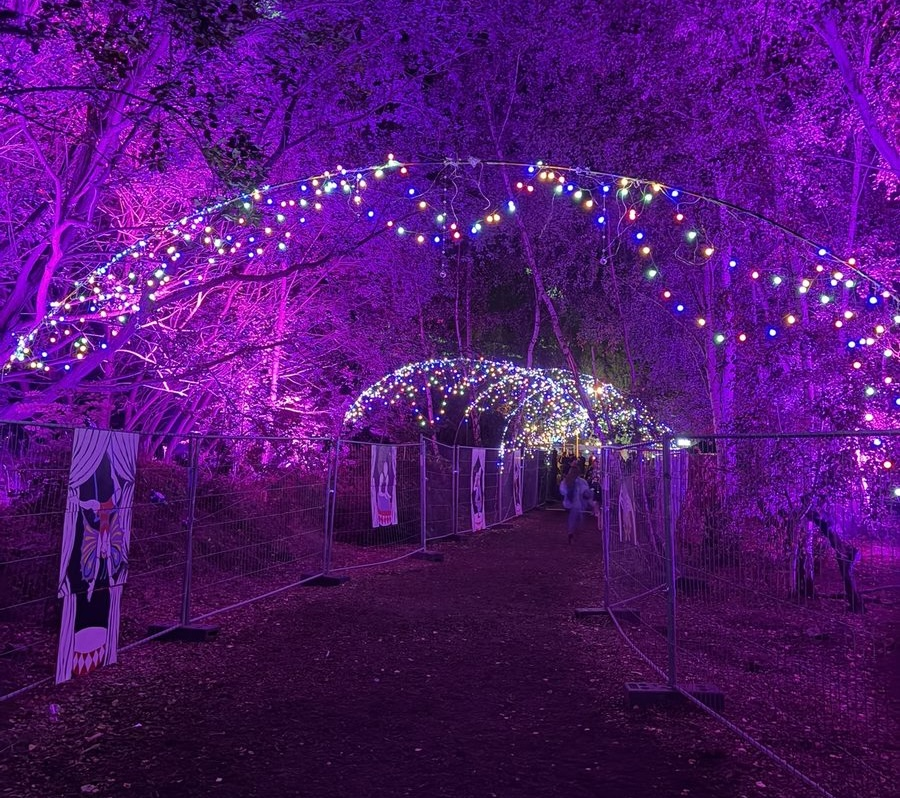
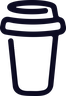

Things I've builtProjects
The human behind itAbout me
I like signals other people throw away. By day I wrangle manufacturing data, train cost-prediction models and teach wearables to understand movement. The common thread: taking something noisy and real [factory floors, bank accounts, ankle sensors, the air in my room] and making it make sense.
Away from the keyboard I'm usually exploring: hiking somewhere green, hunting down light installations after dark, or adding one more specimen to a slowly growing mineral collection. I just like building stuff — software, circuits, furniture, whatever's in reach.

The mineral shelf 🔎
A few favourites from my own collection. Click for a closer inspection.
Powered by curiosity
(and quite a lot of coffee)
Every project on this page started the same way: a mug in hand and a "what if…?" If something here made you smile, you can toss a coffee into the fuel reserve, it will be converted into sensors, LEDs and late-night prototypes.

Buy me a coffeeLet's talk!
Got an idea, a mischievous dataset, or an exciting project?